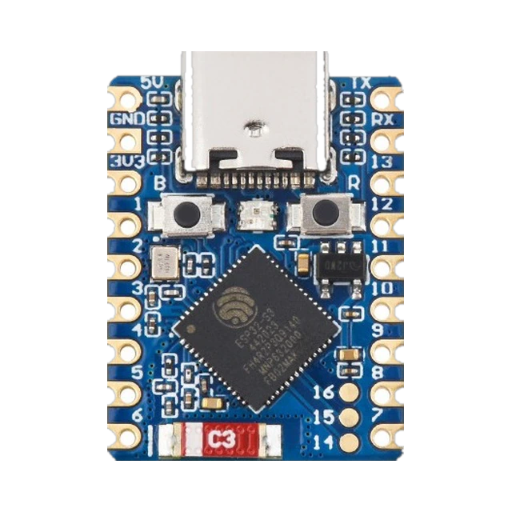

Arma e registra
La registrazione parte quando armi, da un interruttore della radio, o con entrambi. Ogni comando viene verificato su ciò che la camera riporta davvero.
RecLink collega il flight controller Betaflight alla tua GoPro o DJI Osmo. Funziona sulla sua piccola scheda personalizzata oppure su una comune scheda di sviluppo ESP32 che magari hai già. Avvia e ferma la registrazione dalla radio, mostra lo stato della camera nell'OSD e sincronizza l'orologio dal GPS, senza mai influire sul volo del quad.



Il firmware 0.3.0 è una pre-release e può contenere bug. Usalo a tuo rischio. Esegui ogni passaggio con le eliche rimosse.
Registra all'arm, leggi la camera nell'OSD e configura tutto dal telefono.
La registrazione parte quando armi, da un interruttore della radio, o con entrambi. Ogni comando viene verificato su ciò che la camera riporta davvero.
Stato di registrazione, tempi, batteria, spazio SD e impostazioni sull'OSD di Betaflight, su quattro righe che disegni tu.
La scheda apre un suo Wi-Fi finché sei disarmato. Nessuna app, nessun cloud, nessun account. Si spegne appena armi.
Lo alimenta una camera simulata, con gli stessi token che usi nel configuratore. Scegli tu cosa mettere su ognuna delle quattro righe da 16 caratteri.
Una piccola scheda, nove compiti.
Avvio e stop all'arm, da un interruttore, arm OPPURE interruttore, o arm E interruttore. Ogni comando è confermato dalla camera prima di andare avanti.
Un interruttore a 2–6 posizioni cambia le impostazioni della camera in volo. Su GoPro ogni zona imposta risoluzione, frame rate, lente, HyperSmooth e Protune; su DJI ogni zona sceglie una modalità.
Stato, tempo trascorso e rimanente, batteria, spazio SD in minuti o GB, risoluzione, frame rate, lente, profilo colore, segnale e GPS del FC.
Segna il momento migliore con un interruttore a impulso: un tag HiLight su GoPro, il tasto Quick-Switch su DJI.
Abbina qualsiasi mix di GoPro e DJI. All'accensione RecLink si collega a quella abbinata con il segnale più forte.
Imposta l'orologio della camera dall'ora GPS del flight controller, così i filmati hanno la data giusta.
In opzione invia posizione e ora del velivolo a una camera DJI per il suo overlay di telemetria.
La modalità digitale limita l'output ai glifi che l'OSD dei goggles DJI sa disegnare, così niente diventa un punto interrogativo.
Abbina, crea le zone, modifica l'OSD e aggiorna il firmware da una pagina web. Il Wi-Fi è attivo solo da disarmati.
Due marchi via Bluetooth LE. Ecco cosa è verificato e cosa no.
Open GoPro BLE
Registrazione, telemetria OSD e zone basate sulle impostazioni sono verificate su una HERO11 Black. Gli altri modelli della stessa generazione usano la stessa API.
Open GoPro BLE
Dovrebbe funzionare, ma potrebbe richiedere id di impostazione che questo firmware non usa ancora. Non provata.
DUML via BLE
Registrazione, cambio modalità e stato sono implementati dalla demo open source di DJI. Nessuna camera DJI è stata ancora provata.
HERO8 e precedenti non hanno l'API Bluetooth Open GoPro e non sono supportate.
| Funzione | GoPro | DJI |
|---|---|---|
| Connessione e riconnessione automatica | ||
| Telemetria OSD (rec, batteria, SD, tempi) | ||
| Lettura di risoluzione, frame rate e modalità | ||
| Avvio / stop registrazione | ||
| Zone: impostazioni della camera | Non disponibile | |
| Zone: modalità della camera | Non disponibile | |
| Tag di highlight | Al suo posto il tasto Quick-Switch | |
| Sincronizzazione orologio dal GPS | Alla cieca: senza verifica | |
| Posizione GPS del velivolo alla camera | Non disponibile |
Lo stesso firmware funziona su tre tipi di scheda. Non ti serve la scheda RecLink personalizzata per usare RecLink.
0,68 g e costruita per essere leggera. Pensata per i cinewhoop, piccola come un ricevitore, con quattro pad e nient'altro.
Una scheda di sviluppo minuscola, economica e facile da trovare. Caricala dal browser via USB.
La Waveshare ESP32-S3-Zero. Caricala dal browser via USB. Il suo LED RGB mostra lo stato a colori.
La stessa scheda minuscola e leggera ora ascolta anche il Remote ID degli altri droni in volo e ti avvisa nell'OSD, oltre al controllo della camera che già fa. Resta spento finché non lo attivi.
Vedi gli altri droni in volo intorno a te e ricevi avvisi quando conta di più.
Una breve riga indica distanza e direzione del drone e lampeggia più in fretta man mano che si avvicina.
La posizione arriva dal GPS che hai già a bordo, quindi non serve un modulo GPS in più.
Non trasmette il Remote ID e non ti rende conforme alle normative.
Leggi il capitolo sul Remote ID
Pre-release: spento per impostazione predefinita e non ancora provato in volo. È un aiuto, non un sistema anticollisione.
RecLink è un passeggero. Se si guasta, il peggio che succede è un testo OSD non aggiornato.
Legge solo dal flight controller e scrive testo OSD. Arming, RC, PID e navigazione sono fuori portata, e il codice rifiuta quei comandi da solo.
Qualsiasi guasto lascia il velivolo perfettamente pilotabile. Dopo un guasto la scheda si riavvia in circa 300 ms e la camera si ricollega da sola.
Il punto di accesso si spegne entro 100 ms dall'arm. In volo è attivo solo il Bluetooth.
Ogni comando alla camera parte e viene confermato dopo, e nulla nel percorso di volo alloca memoria.
Collegati al Wi-Fi RECLINK da disarmato e qualsiasi pagina lo apre. Le schede principali:
Circa quindici minuti. La guida rapida descrive ogni passaggio con le immagini.
Collega la scheda a una UART libera del flight controller.
Installa il firmware dal browser via USB.
Apri il configuratore e abbina la GoPro o la DJI.
Scegli quando registrare, crea le zone, disegna l'OSD.
Quattro cose.
La scheda RecLink (in sviluppo), una ESP32-C3 SuperMini oppure una Waveshare ESP32-S3-Zero. Eseguono tutte lo stesso firmware.
MSP API 1.47 o superiore, per i messaggi OSD personalizzati.
GoPro HERO 9 o successiva, oppure una DJI Osmo (sperimentale).
Una porta seriale libera sul flight controller.
Dalla scatola alla prima registrazione in circa 15 minuti. Sette passaggi brevi, in parole semplici.
Ogni funzione, impostazione e indicatore, spiegati con diagrammi e schermate del configuratore web. 15 capitoli e un riferimento.
Il PCB personalizzato RecLink: esplorala in 3D, strato per strato. In sviluppo.
Scegli la scheda e la versione, poi caricala via USB o aggiornala via Wi-Fi.
Carica la pre-release, oppure leggi prima la guida. Eliche rimosse per le prove a banco.